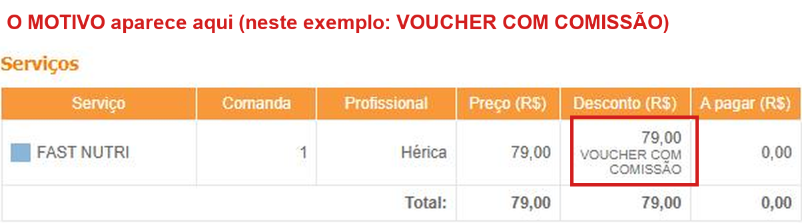

5 segundos por comanda é o que separa "achamos que deu certo" de "sabemos exatamente quanto cada ação vendeu".
Em setembro a loja faturou R$ 50.759 e o tráfego pago custou R$ 3.030. O problema: só conseguimos dizer o que cada ação rendeu quando alguém dava um jeito de marcar. Veja o que a marcação já nos mostrou:
| Ação | Investiu | Faturamento associado | Para cada R$ 1 |
|---|---|---|---|
| Campanha de Unha | R$ 191 | R$ 3.827 | ≈ R$ 20 |
| Dia do Cliente | R$ 151 | R$ 1.782 (no dia) | ≈ R$ 12 |
| Combos de setembro | R$ 393 | não dá pra provar | ? |
| Combo Escova+Sobrancelha+Mão (seg/ter) | R$ 84 | R$ 0 até agora | ? |
Faturamento associado = o que a loja faturou nos serviços/dias ligados à ação (não é lucro nem prova de causa exclusiva).
Resultado prático: quando cada comanda diz de qual ação veio, a gente descobre o que multiplicar e o que cortar, e cada real investido em anúncio vai para onde dá mais retorno. Duas ações já mostraram que unha e ação datada rendem muito mais do que combo "do dia corrido". Sem a marcação certa, a próxima decisão volta a ser palpite. E um ticket médio 20% maior, por exemplo, são +R$ 10 mil por mês — mas só dá para perseguir isso medindo.
| Quando | Motivo (aparece com este nome) |
|---|---|
| Cliente do cupom da hidratação grátis (zera os R$ 79) | CUPOM HIDRATAÇÃO |
| Combo Escova + Sobrancelha + Mão (segunda e terça, R$ 149): aplicar o desconto necessário para a conta fechar em R$ 149,00 | COMBO ESCOVA+SOBRANCELHA+MÃO |
| Novas ações (campanha para clientes novos) | A Luana avisa o nome de cada uma antes de começar |
Na tela Ver Fechamento (Agenda → clicar na cliente → Ver Fechamento), o motivo aparece embaixo do valor do desconto, no serviço que recebeu o desconto. Cada item (serviço ou produto) pode ter o seu próprio motivo.

Exemplo real (dados da cliente removidos). Neste caso o motivo é o antigo, "VOUCHER COM COMISSÃO". A partir de agora deve aparecer o nome da ação (por exemplo, CUPOM HIDRATAÇÃO).
Dúvida na hora? Fale com a Luana — é melhor perguntar do que marcar errado.